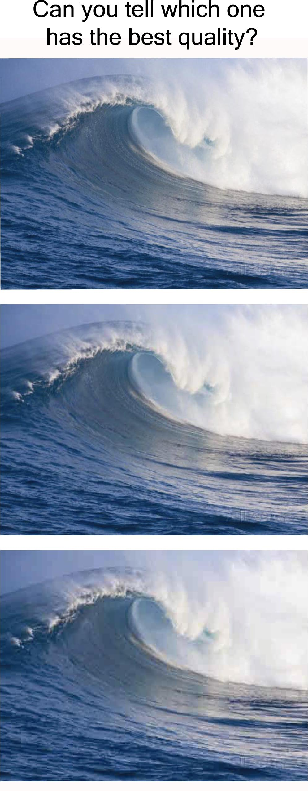

This week I took Stanford’s computer science 101 online course and I have learned many very interesting stuffs. The course covers broad topics in computer programming and gadgets we use everyday. Some of them I have no idea they belong to computer science! Lossless and lossy formats, editing images to other colors or grayscale, how multiple computers share one Ethernet or wifi, how sound waves are recorded as analog and digitally, why DVD can be played normally with a whole on it, internet security, and more. I get a light touch on each topic. Today, I’m going to share what I’ve learned for lossless and lossy formats.As we all know, jpg is the most common format for digital images. It has nice quality and small file size. It’s ideal for photo storage. However, jpg is a lossy format. Every time we save a jpg, it tries to compress the image and the quality will get worse and worse. It’s not a good option for logos or images that need to be edited repetitively. Another popular image format is png, which is a lossless format. Its brilliant compression makes it much smaller than the notorious bmp format (which does not compress at all) as well as maintaining a lossless format. Although it’s not as small as a jpg, png is ideal for logos and computer artworks.
